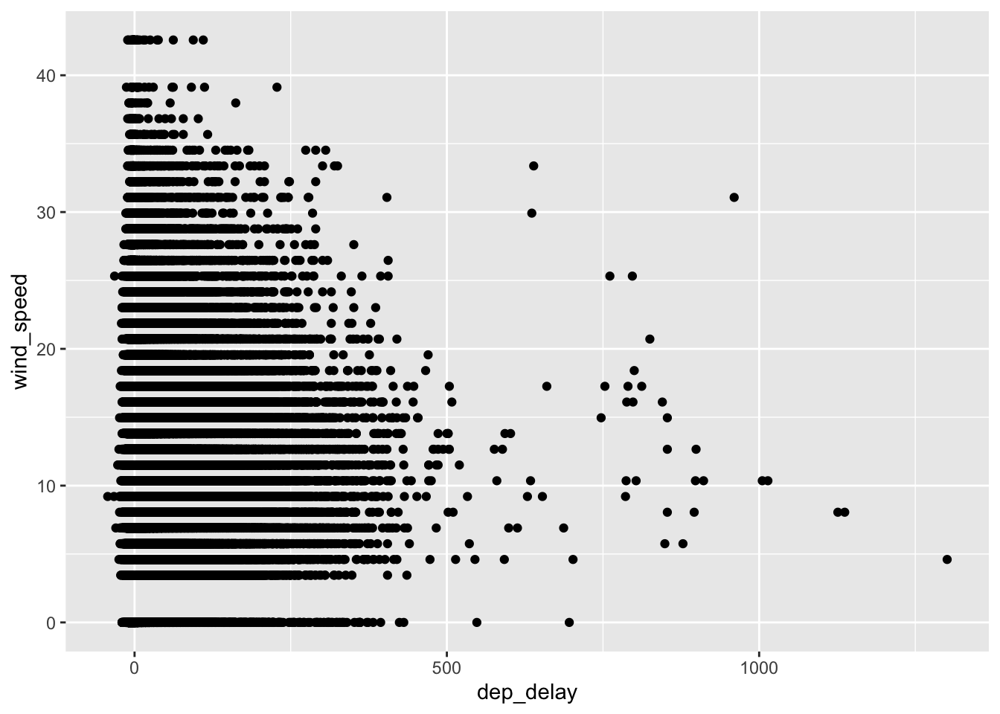
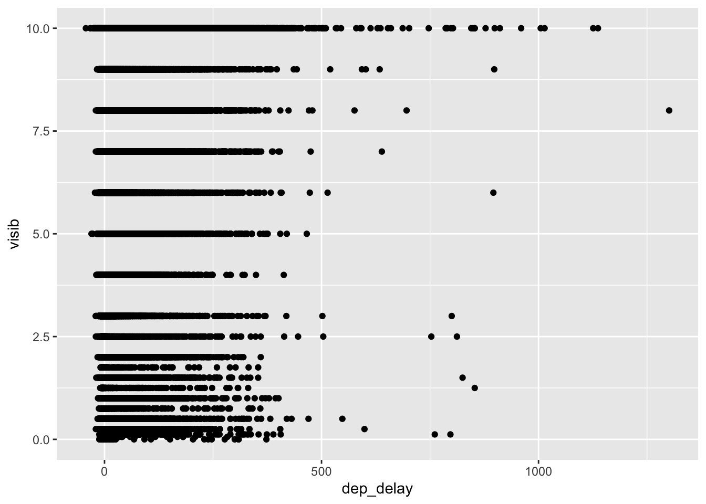
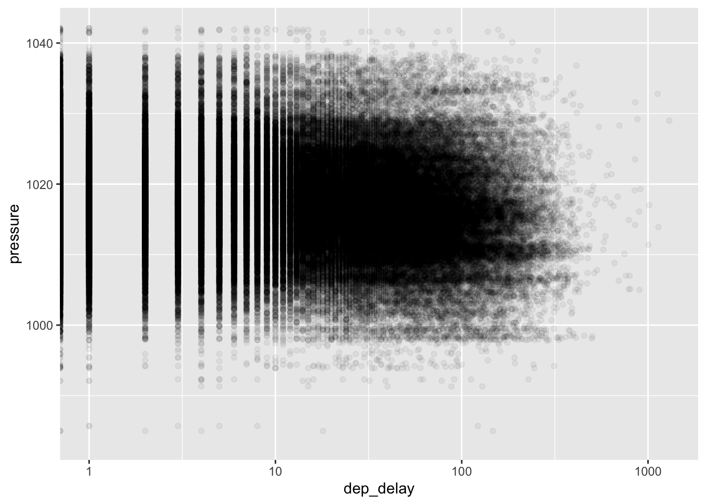

library(tidyverse)## ── Attaching packages ────────────────────────────────────────────────────────────────────────────────────── tidyverse 1.3.1 ──## ✔ ggplot2 3.3.5 ✔ readr 2.0.2
## ✔ tibble 3.1.5 ✔ dplyr 1.0.7
## ✔ tidyr 1.1.4 ✔ forcats 0.5.1## ── Conflicts ───────────────────────────────────────────────────────────────────────────────────────── tidyverse_conflicts() ──
## ✖ dplyr::filter() masks stats::filter()
## ✖ dplyr::lag() masks stats::lag()library(nycflights13)Often in R we get pretty bad error messages. This is an exception.
filter(flights, dep_delay <= 0, origin = "JFK")## Error: Problem with `filter()` input `..2`.
## ✖ Input `..2` is named.
## ℹ This usually means that you've used `=` instead of `==`.
## ℹ Did you mean `origin == "JFK"`?If we write it a bit differently, we don’t get a super-informative error message.
filter(flights, dep_delay <= 0 & origin = "JFK")## Error: unexpected '=' in "filter(flights, dep_delay <= 0 & origin ="We can also filter using OR logic (|).
filter(flights, dest == "LAX" | dest == "ORD")## # A tibble: 33,457 × 19
## year month day dep_time sched_dep_time dep_delay arr_time sched_arr_time
## <int> <int> <int> <int> <int> <dbl> <int> <int>
## 1 2013 1 1 554 558 -4 740 728
## 2 2013 1 1 558 600 -2 753 745
## 3 2013 1 1 558 600 -2 924 917
## 4 2013 1 1 608 600 8 807 735
## 5 2013 1 1 628 630 -2 1016 947
## 6 2013 1 1 629 630 -1 824 810
## 7 2013 1 1 656 700 -4 854 850
## 8 2013 1 1 658 700 -2 1027 1025
## 9 2013 1 1 702 700 2 1058 1014
## 10 2013 1 1 709 700 9 852 832
## # … with 33,447 more rows, and 11 more variables: arr_delay <dbl>,
## # carrier <chr>, flight <int>, tailnum <chr>, origin <chr>, dest <chr>,
## # air_time <dbl>, distance <dbl>, hour <dbl>, minute <dbl>, time_hour <dttm>Create a smaller dataset…
flights_small <- select(flights, matches("time"), dest, origin)… that we then add new variables to by dividing all variables whose names end with “time” by 60, so converting minutes to hours. The names are set to the original column names, but with "_hour" appended.
mutate(flights_small, across(.cols = ends_with("time"),
.fns = ~ . / 60,
.names = "{.col}_hour"))## # A tibble: 336,776 × 13
## dep_time sched_dep_time arr_time sched_arr_time air_time time_hour
## <int> <int> <int> <int> <dbl> <dttm>
## 1 517 515 830 819 227 2013-01-01 05:00:00
## 2 533 529 850 830 227 2013-01-01 05:00:00
## 3 542 540 923 850 160 2013-01-01 05:00:00
## 4 544 545 1004 1022 183 2013-01-01 05:00:00
## 5 554 600 812 837 116 2013-01-01 06:00:00
## 6 554 558 740 728 150 2013-01-01 05:00:00
## 7 555 600 913 854 158 2013-01-01 06:00:00
## 8 557 600 709 723 53 2013-01-01 06:00:00
## 9 557 600 838 846 140 2013-01-01 06:00:00
## 10 558 600 753 745 138 2013-01-01 06:00:00
## # … with 336,766 more rows, and 7 more variables: dest <chr>, origin <chr>,
## # dep_time_hour <dbl>, sched_dep_time_hour <dbl>, arr_time_hour <dbl>,
## # sched_arr_time_hour <dbl>, air_time_hour <dbl>Here’s an example where we apply two functions to the same variables. The default names in this case are the names of the original variables and the names of the functions that are applied to them.
mutate(flights_small, across(.cols = ends_with("time"),
.fns = list(second = ~ . * 60,
hour = ~ . / 60)))## # A tibble: 336,776 × 18
## dep_time sched_dep_time arr_time sched_arr_time air_time time_hour
## <int> <int> <int> <int> <dbl> <dttm>
## 1 517 515 830 819 227 2013-01-01 05:00:00
## 2 533 529 850 830 227 2013-01-01 05:00:00
## 3 542 540 923 850 160 2013-01-01 05:00:00
## 4 544 545 1004 1022 183 2013-01-01 05:00:00
## 5 554 600 812 837 116 2013-01-01 06:00:00
## 6 554 558 740 728 150 2013-01-01 05:00:00
## 7 555 600 913 854 158 2013-01-01 06:00:00
## 8 557 600 709 723 53 2013-01-01 06:00:00
## 9 557 600 838 846 140 2013-01-01 06:00:00
## 10 558 600 753 745 138 2013-01-01 06:00:00
## # … with 336,766 more rows, and 12 more variables: dest <chr>, origin <chr>,
## # dep_time_second <dbl>, dep_time_hour <dbl>, sched_dep_time_second <dbl>,
## # sched_dep_time_hour <dbl>, arr_time_second <dbl>, arr_time_hour <dbl>,
## # sched_arr_time_second <dbl>, sched_arr_time_hour <dbl>,
## # air_time_second <dbl>, air_time_hour <dbl>Group by can be used in order to apply a function to groups of observations in a data frame. In this example, I create a group for each day in the data, and then summarise it by counting the number of flights for each day, and calculating the mean arrival delay.
by_day <- group_by(flights, year, month, day)
summarise(by_day, n = n(), mean_arr_delay = mean(arr_delay, na.rm = TRUE))## `summarise()` has grouped output by 'year', 'month'. You can override using the `.groups` argument.## # A tibble: 365 × 5
## # Groups: year, month [12]
## year month day n mean_arr_delay
## <int> <int> <int> <int> <dbl>
## 1 2013 1 1 842 12.7
## 2 2013 1 2 943 12.7
## 3 2013 1 3 914 5.73
## 4 2013 1 4 915 -1.93
## 5 2013 1 5 720 -1.53
## 6 2013 1 6 832 4.24
## 7 2013 1 7 933 -4.95
## 8 2013 1 8 899 -3.23
## 9 2013 1 9 902 -0.264
## 10 2013 1 10 932 -5.90
## # … with 355 more rowsHere is another example of mutate where we use the existing function mean. We have to pass it the argument na.rm = TRUE in order to get something back from it. This is the reason why the argument names that are specific to across start with a period. We can then tell what arguments belong to across, and what arguments belong to the function(s) in .fns.
group_by(flights, year, month, day) %>%
mutate(across(.cols = ends_with("time"),
.fns = mean,
na.rm = TRUE))## # A tibble: 336,776 × 19
## # Groups: year, month, day [365]
## year month day dep_time sched_dep_time dep_delay arr_time sched_arr_time
## <int> <int> <int> <dbl> <dbl> <dbl> <dbl> <dbl>
## 1 2013 1 1 1385. 1372. 2 1562. 1568.
## 2 2013 1 1 1385. 1372. 4 1562. 1568.
## 3 2013 1 1 1385. 1372. 2 1562. 1568.
## 4 2013 1 1 1385. 1372. -1 1562. 1568.
## 5 2013 1 1 1385. 1372. -6 1562. 1568.
## 6 2013 1 1 1385. 1372. -4 1562. 1568.
## 7 2013 1 1 1385. 1372. -5 1562. 1568.
## 8 2013 1 1 1385. 1372. -3 1562. 1568.
## 9 2013 1 1 1385. 1372. -3 1562. 1568.
## 10 2013 1 1 1385. 1372. -2 1562. 1568.
## # … with 336,766 more rows, and 11 more variables: arr_delay <dbl>,
## # carrier <chr>, flight <int>, tailnum <chr>, origin <chr>, dest <chr>,
## # air_time <dbl>, distance <dbl>, hour <dbl>, minute <dbl>, time_hour <dttm>Here are a couple of examples how we can use separate and unite in order to clean up a messy dataset.
table5 %>%
unite("year", century, year, sep = "") %>%
mutate(year = as.numeric(year)) %>%
separate(rate, into = c("cases", "population"), sep = "/",
convert = TRUE)## # A tibble: 6 × 4
## country year cases population
## <chr> <dbl> <int> <int>
## 1 Afghanistan 1999 745 19987071
## 2 Afghanistan 2000 2666 20595360
## 3 Brazil 1999 37737 172006362
## 4 Brazil 2000 80488 174504898
## 5 China 1999 212258 1272915272
## 6 China 2000 213766 1280428583table5 %>%
unite("year", century, year, sep = "") %>%
mutate(year = as.numeric(year)) %>%
separate(rate, into = c("cases", "population"), sep = "/") %>%
mutate(across(c(cases, population), as.integer))## # A tibble: 6 × 4
## country year cases population
## <chr> <dbl> <int> <int>
## 1 Afghanistan 1999 745 19987071
## 2 Afghanistan 2000 2666 20595360
## 3 Brazil 1999 37737 172006362
## 4 Brazil 2000 80488 174504898
## 5 China 1999 212258 1272915272
## 6 China 2000 213766 1280428583Here is an example where I join the flights data frame with the weather data frame in order to see if there is a correlation between the departure delay and any of the weather metrics.
First I create a subset of the flights data, just for the sake of convenience.
flights2 <- flights %>%
select(year:day, hour, dest, origin, dep_delay)This is then joined with the weather data.
flights_weather <- left_join(flights2, weather, c("origin", "year", "month", "day", "hour"))Neither wind speed nor visibility seem to be associated with the departure delay.
ggplot(flights_weather, aes(dep_delay, wind_speed)) +
geom_point()## Warning: Removed 9861 rows containing missing values (geom_point).
ggplot(flights_weather, aes(dep_delay, visib)) +
geom_point()## Warning: Removed 9783 rows containing missing values (geom_point).
I pull out some weather variables that I then correlate with the departure delay. For the correlation, we need to specify how missing values should be handled, check ?cor for details.
weather_var <- flights_weather %>% select(dewp, humid, wind_speed, precip, pressure)
cor(flights_weather$dep_delay, weather_var,
use = "complete.obs")## dewp humid wind_speed precip pressure
## [1,] 0.09325152 0.08088159 0.0336295 0.05104822 -0.1142736From this, we can see that the metric pressure had the highest correlation with the departure delay, so we can go ahead and plot this relationship. There is a lot of overplotting going on, so I set the alpha parameter to a smallish value to be able to see the relationship better. A value of 1/20 means that if we have 20 points that overlap, then the colour should be pure black.
ggplot(flights_weather, aes(dep_delay, pressure)) +
geom_point(alpha = 1/20) +
scale_x_log10()## Warning in self$trans$transform(x): NaNs produced## Warning: Transformation introduced infinite values in continuous x-axis## Warning: Removed 211715 rows containing missing values (geom_point).